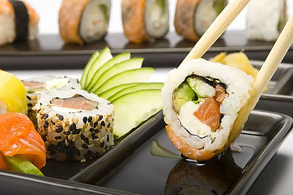

A história da Culinária Japonesa
O Japão é um país rodeado pelos oceanos, e pela lógica, não seria um espanto ter um povo que consome bastante peixe e frutos do mar. Os peixes, além de estarem ao alcance de suas mãos, são muito saudáveis, ricos em proteínas, minerais, aminoácidos, vitaminas e com baixo teor de gordura. Porém, o que fez o povo japonês consumir basicamente a carne de peixe em detrimento de outras, foi um ato do Imperador Tenmu . Ele havia lançado um decreto no ano de 676 que, a partir daquela data, não mais se poderia consumir carne de vaca, cavalo, cachorro, macaco e frango. A partir de então, o Japão se tornou o maior consumidor de peixe, além de arroz e verduras.

Mas, enganam-se aqueles que pensam que sashimi e shoyu sempre estiveram juntos. Antigamente, comia-se o sashimi com uma mistura feita basicamente de vinagre e sal, podendo acrescentar a mostarda, se desejar. O molho a base de soja começou a ser utilizado juntamente com o sashimi, somente em meados da Era Edo (1603-1867). Atualmente, existem vários tipos de shoyu, mas o mais indicado para comer com o sashimi é o do tipo karaguchi que tem um sabor mais encorpado. O wasabi (raíz forte) serve para aprofundar o sabor do sashimi.

Não podemos nos esquecer do nabo ou pepino cortados em tiras bem fininhas que acompanham o sashimi. Parecem itens decorativos, mas, originalmente, serviam como elementos que ajudavam na digestão da carne crua (devendo ser comidos juntamente com os filés) e serviam também como inoculadores do cheiro do peixe. Com a mesma função, podem ser utilizadas folhas de shiso.